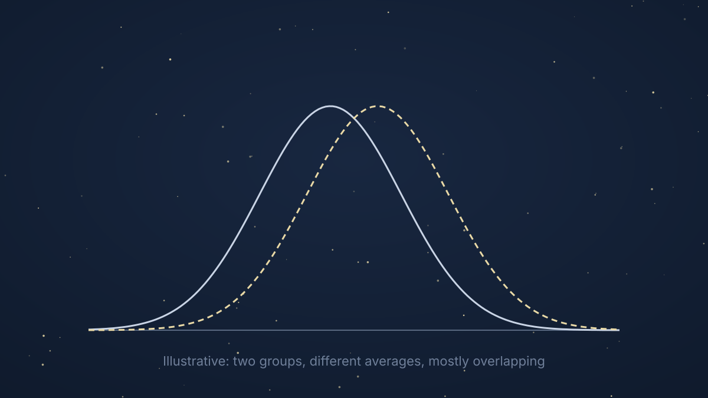

Two Truths at Once
Your species reproduces in two sexes, as most complex life on your planet does. For nearly all of your history this was simply obvious. In modern America it has become one of the most nervous subjects of all. Say that men and women differ, and some will call you a bigot. Say the differences matter less than people think, and others will call you naive. Both reactions are emotional reasoning, the habit Chapter 2 warned against.
From outside your tribes, two truths are visible at once. First, men and women differ on average in real, measurable ways, some rooted in biology. Denying this insults the evidence. Second, an average describes a group, never a person. Plenty of individual women outperform plenty of individual men at things men do better on average, and the reverse is just as true. Treating an individual as an average insults the person.
The Body: Where the Evidence Is Clearest
On physical performance, your data leave little room for argument. A study of 82 events across swimming, track and field, cycling, weightlifting, and speed skating found the gap between men's and women's world records narrowed through much of the 20th century, then stabilized after 1983 at an average of about 10% (Thibault et al., Journal of Sports Science and Medicine). The gap ranged from 5.5% in the 800-meter freestyle swim to 18.8% in the long jump. Researchers trace it to differences in height, muscle mass, body fat, and aerobic capacity that result from genetic and hormonal differences.
Strength shows a wider gap, especially in the upper body. On average, adult women's upper-limb strength is about 50% to 60% of men's, and lower-limb strength about 60% to 70% (Nuzzo & Pinto, via PMC). A review found the difference appears notably around age 15 and comes mainly from greater muscle mass, not differences in how fully muscles are activated (Nuzzo, PubMed).
Two qualifications. These are group averages; individuals vary widely. And women respond to training just as well: a meta-analysis found men and women gained muscle size and lower-body strength at similar rates, with women showing larger relative gains in upper-body strength (PubMed).
The rational conclusion: separate sports categories rest on biology. And jobs with genuine strength requirements will, on average, draw more men, as long as the standard is set by the job and applied the same way to everyone.
The Mind: Real Differences, Mostly Modest
Personality tells a subtler story. A study of more than 23,000 people across 26 cultures found that women, on average, described themselves as higher in neuroticism (the tendency to experience negative emotions), agreeableness, and warmth, while men scored higher in assertiveness (Costa, Terracciano & McCrae, via Duke). The researchers stressed these differences are small relative to variation within each sex. Averaged across countries, women score about 0.4 to 0.5 standard deviations higher in agreeableness and neuroticism (Kaiser et al., Journal of Personality), a moderate gap with heavy overlap.

Mental health shows a pattern worth knowing. U.S. federal health statisticians found that from 2013 to 2016, 10.4% of women reported symptoms of depression compared with 5.5% of men (NBC News, on CDC data). Yet American men die by suicide at about four times the rate of women, and one study using a depression scale that included symptoms like rage and risk-taking found no significant difference between the sexes (American Psychological Association). Men and women may suffer at similar rates but show it differently.
What does this mean for performance? Less than either American tribe claims. A moderate average difference in a trait tells an employer almost nothing about the person across the desk. Nothing in this research supports the old claim that women are "too emotional" to lead, or that men are incapable of empathy.
Interests: The Largest Difference of All
To understand why men and women end up in different careers, look less at ability and more at interest. A 2009 meta-analysis of more than 500,000 people found that men, on average, prefer working with things and women prefer working with people, a large effect of 0.93 standard deviations (Su, Rounds & Armstrong, Psychological Bulletin). A follow-up found that the share of women in each science field tracked these interest differences and was not associated with the level of math ability the field required (Su & Rounds, Frontiers in Psychology).
This helps explain why women are over-represented in the social sciences yet scarce in engineering. It is not mainly that women can't do engineering. On average, fewer want to, and free people choose work they find interesting.
Where the interests come from is genuinely contested. Personality differences between the sexes are larger, not smaller, in prosperous, healthy, egalitarian countries (Schmitt et al., Journal of Personality and Social Psychology). Some researchers read this as inborn tendencies showing more clearly when people are freest to choose. A famous 2018 study by Gijsbert Stoet and David Geary claimed a similar "gender-equality paradox" for science degrees, but it had to be corrected after other researchers found a mismatch in its data, and those critics reported the link did not hold up under different measures (Inside Higher Ed). Stoet and Geary replied that their core finding stands (Psychological Science). The interest difference is large and well documented. How much comes from biology and how much from culture is still argued by serious people.
The Pay Gap: Mostly About Babies and Hours
The most cited explanation of the modern pay gap comes from Harvard economist Claudia Goldin, awarded the 2023 Nobel Prize in economics for this work. Using more than 200 years of American data, she showed the gap was once explained largely by differences in education and occupation. Today, the bulk of it is between men and women in the same occupation, and it largely appears with the birth of the first child (Nobel Prize press release).
Part of the reason is what Goldin calls "greedy work": jobs that pay disproportionately more for long or inflexible hours. When one parent takes the demanding job and the other the flexible one, that parent is more often the mother (USA Today, via Yahoo Finance). Goldin also counts outright discrimination among the factors (Onmanorama).
Here biology and choice meet. Only women bear children, and pregnancy and nursing fall on the mother's body. Who scales back at work afterward is a family's choice, shaped by preference, money, and custom. One can respect those choices while still asking whether workplaces must punish flexibility as heavily as many do.
What Averages Can't Tell You
Overlap is the rule. Even the researchers who documented personality differences across 26 cultures stressed they are small compared with variation inside each sex.
Biology is rarely the whole story. Even for athletic performance, sports scientists list sociocultural and psychological factors alongside physical ones (Hallam & Amorim, Frontiers in Physiology). For interests and careers, the balance is still contested.
Averages describe; they don't prescribe. That women on average prefer working with people does not mean any particular woman should be a nurse rather than an engineer. It means that when there are fewer female engineers, one should not automatically assume someone kept them out. Assuming every gap is discrimination and assuming no gap is both fail the test Chapter 6 poses: was it the start, or the running?
Respect the Data, Respect the Person
Deny real differences, and you design bad policy: fitness standards that ignore physiology, or campaigns that treat every unequal ratio as proof of injustice. Treat them as destiny, and you insult the millions who don't fit the average and waste their talent.
So judge groups by the evidence and individuals by their merits. Hold every job to the standard it truly requires, then let whoever meets it do it. And when a family chooses how to balance work and children, respect that the choice is theirs.
Men and women are different by nature and equal in worth. A thinking species can say both sentences in the same breath.
Sources
- Thibault et al., "Women and Men in Sport Performance," Journal of Sports Science and Medicine (2010)
- Nuzzo & Pinto, sex differences in limb strength (via PMC)
- Nuzzo, narrative review of sex differences in muscle strength (PubMed)
- Sex differences in resistance training: meta-analysis (PubMed)
- Costa, Terracciano & McCrae, "Gender differences in personality traits across cultures" (2001)
- Kaiser et al., "Global sex differences in personality," Journal of Personality (2019)
- NBC News, on CDC depression data (2018)
- American Psychological Association, "By the Numbers: Men and depression" (2015)
- Su, Rounds & Armstrong, "Men and things, women and people," Psychological Bulletin (2009)
- Su & Rounds, "All STEM fields are not created equal," Frontiers in Psychology (2015)
- Schmitt et al., "Why can't a man be more like a woman?" (2008)
- Inside Higher Ed, "STEM's Ongoing Sex-Difference Debate" (2020)
- Stoet & Geary, reply to Richardson and colleagues, Psychological Science (2020)
- Nobel Prize in Economic Sciences 2023, press release
- USA Today, via Yahoo Finance, on Goldin and "greedy" work (2023)
- Onmanorama, on Claudia Goldin's research (2023)
- Hallam & Amorim, Frontiers in Physiology (2022)